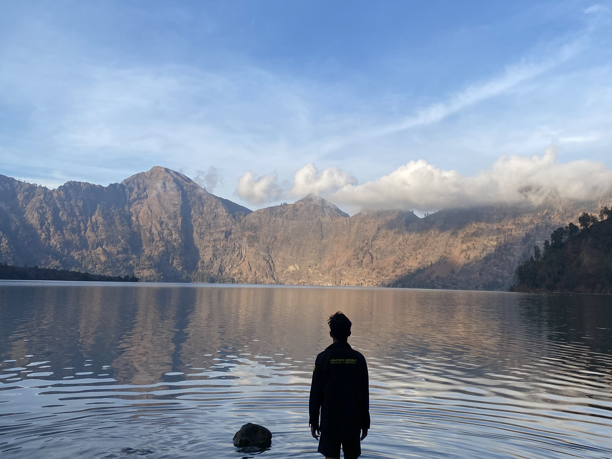
NEBO
Analis Geospasial
Karya Terpilih
Lima Proyek
yang Membentuk
Cara Saya Bekerja
Dari geomorfologi pesisir, kesesuaian lahan pertanian, kerawanan bencana, aksesibilitas layanan publik, hingga presisi agrikultur berbasis sensor hiperspektral. Kombinasi proyek individu dan kolaboratif yang mencerminkan kemampuan bekerja mandiri maupun dalam tim lintas disiplin.
 Peta Estimasi Produktivitas
Klik untuk layar penuh
Peta Estimasi Produktivitas
Klik untuk layar penuh


.png "Administrasi")


.png "Ketinggian Kanopi")
.png "Lereng")
.png "Suhu Permukaan")
.png "Produktivitas Air")
Klik thumbnail untuk bergantiKlik gambar utama untuk layar penuh
R² = 0,83
Akurasi Model ISE-PLS
100 → 8 Band
Reduksi Dimensi (64 HST)
90 Sampel
Grid 1×1m · 7 Petak
RMSE 0,021
Batas Galat
Masalah
Konsumsi beras nasional diproyeksikan mencapai 31,7 juta ton pada 2045 sementara produksi turun 2,05% menjadi 30,90 juta ton (2023). Metode estimasi konvensional tidak mampu menangkap variabilitas spasial produktivitas secara efisien dan presisi.
Metode
Metode ISE-PLS (Iterative Stepwise Elimination Partial Least Squares) pada citra UAV BlackBird V2 hiperspektral (100 band). Akuisisi fase pembungaan (64 HST) dan pengisian bulir (73 HST). Band red-edge (755 760 nm) dan NIR (930 935 nm) teridentifikasi sebagai band dominan.
Dampak
ISE-PLS mereduksi 100 band menjadi 8 band tanpa kehilangan akurasi signifikan (R²=0,8335). Estimasi spasial produktivitas 0,391 0,634 kg/m² mencerminkan pengaruh irigasi terasering dan mikrotopografi. Predikat Sangat Memuaskan · Lulus Juli 2025.
 Peta Kesesuaian Lahan
Klik untuk layar penuh
Peta Kesesuaian Lahan
Klik untuk layar penuh


Klik thumbnail untuk bergantiKlik gambar utama untuk layar penuh
5 Kelas
Kesesuaian Lahan
34,27%
Wilayah Cukup Sesuai (S2s)
45,33%
Wilayah Tidak Sesuai (N)
4 Variabel
Elevasi · Lereng · Tanah · Lahan
Masalah
Potensi agrowisata nanas di Kabupaten Purwakarta belum terpetakan secara spasial perencanaan pengembangan sektor pertanian tidak memiliki basis data lokasi optimal yang dapat digunakan pemerintah daerah maupun petani.
Metode
Analisis Multikriteria Spasial (SMCA) dengan Analisis Interseksi pada 4 variabel: elevasi (DEMNAS BIG), lereng, tekstur tanah (FAO-UNESCO), dan penggunaan lahan (RBI BIG). Matriks kesesuaian FAO 1976 menghasilkan 5 kelas (S1s, S2, S2s, S3e, N). Dikerjakan via ArcGIS Pro 3.1.1.
Dampak
Mengidentifikasi 34,27% wilayah cukup sesuai (S2s) dan memetakan faktor pembatas utama: lereng curam (>20%) dan dominasi tekstur liat. Hanya bagian selatan bertekstur lempung yang potensial. Diterbitkan sebagai makalah ilmiah.
 Peta Geomorfologi
Klik untuk layar penuh
Peta Geomorfologi
Klik untuk layar penuh


Klik thumbnail untuk bergantiKlik gambar utama untuk layar penuh
7 Peta
Tematik Geomorfologi
22 Orang
Tim (20 Mhs + 2 Dosen)
135+
Audiens Presentasi
ISBN + HAKI
Publikasi & Peta Terdaftar
Masalah
Desa Cimanggu, pesisir selatan Sukabumi, memiliki geomorfologi beragam (perbukitan, dataran pesisir, sistem sungai) namun belum terdokumentasi secara ilmiah dan tervalidasi lapangan sebagai basis data spasial awal wilayah yang dapat digunakan pemerintah daerah.
Metode
Interpretasi bentuk lahan dari DEM Nasional BIG (resolusi 5m, IFSAR/TerraSAR-X/ALOS PALSAR) menggunakan ArcGIS Pro 3.0.2. Klasifikasi berdasarkan Zuidam (1983), Dessaunetes (1977), Verstappen (2011). Menghasilkan 7 peta tentatif yang divalidasi 5 hari di lapangan bersama tim 22 orang.
Dampak
Sebagai Ketua Kelas dan peneliti Kelompok Fokus Geomorfologi memimpin logistik tim 22 orang dan mempresentasikan temuan kepada 135+ audiens termasuk 12 dosen dan pejabat daerah. Laporan diterbitkan sebagai buku ber-ISBN dan peta resmi terdaftar di HAKI.
 Peta Kerawanan Kekeringan
Klik untuk layar penuh
Peta Kerawanan Kekeringan
Klik untuk layar penuh


Klik thumbnail untuk bergantiKlik gambar utama untuk layar penuh
65,39%
Wilayah Tingkat Tinggi
5 Kelas
Kerawanan via Sturges
30 Titik
Validasi Lapangan · 3 Hari
99,80 km²
Luas Area · 6 Desa
Masalah
Kecamatan Panggang di pesisir selatan Gunungkidul menghadapi kekeringan meteorologis kronis, namun belum memiliki peta kerawanan berbasis spasial yang tervalidasi sebagai landasan kebijakan mitigasi dan referensi BPBD setempat.
Metode
SMCA dengan Analisis Interseksi dan Skoring Sturges pada 4 variabel: curah hujan (BMKG 2022), lereng (DEMNAS BIG), jenis tanah (FAO-UNESCO), penggunaan lahan (RBI BIG). Formula TKK = CH + PL + KT + JT. Skor 140 205, interval kelas 13. Validasi 30 titik lapangan selama 3 hari.
Dampak
65,39% wilayah berkelas Tinggi terkonsentrasi di Girimulyo, Girisekar, Giriwungu, dan Girisuko dipicu curah hujan rendah (1.000 1.500 mm/tahun), dominasi tanah litosol, dan lereng curam. Makalah ilmiah dan peta siap sebagai referensi kebijakan mitigasi bencana.
 POSYANDU
KLIK LAYAR PENUH
POSYANDU
KLIK LAYAR PENUH
 AMBULANS
KLIK LAYAR PENUH
AMBULANS
KLIK LAYAR PENUH
Klik gambar untuk layar penuh
33
Posyandu Dipetakan
58
Penyedia Layanan Ambulans
Rp28 jt
Hibah DPPM UI + FMIPA UI
9 Kelompok
Tim Survei Lapangan
Masalah
Kesenjangan cakupan ambulans dan Posyandu di Kota Depok belum terpetakan secara spasial tanpa data jangkauan berbasis lokasi, distribusi sumber daya kesehatan kota tidak memiliki pijakan geografis yang kuat untuk pengambilan kebijakan.
Metode
Koordinasi 9 kelompok survei lapangan untuk memetakan 33 Posyandu dan 58 penyedia ambulans. Pemodelan jangkauan dan aksesibilitas spasial, pelatihan geospasial untuk 81 peserta, dan FGD bersama Dinas Kesehatan Kota Depok sebagai validasi kebijakan. Hasil disajikan melalui StoryMaps.
Dampak
Mengamankan hibah Rp28.000.000 dari dua institusi (DPPM UI: Rp20 juta, FMIPA UI: Rp8 juta). Peta distribusi menjadi basis rekomendasi kebijakan redistribusi Posyandu dan ambulans kepada Dinas Kesehatan Kota Depok. Dipublikasikan melalui StoryMaps.

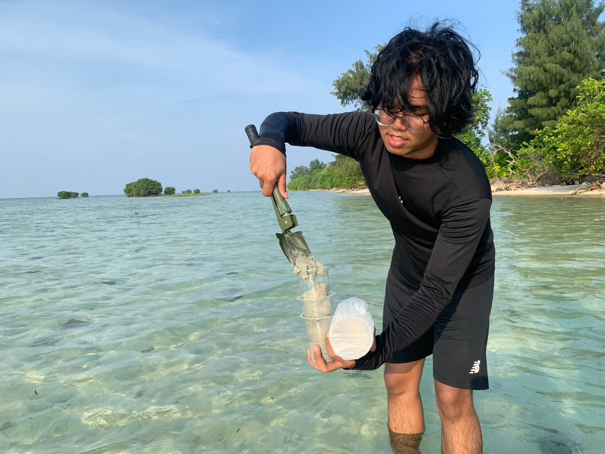

Instrumen Teknis
Alat & Kerangka Kerja
yang Saya Gunakan
- ArcGIS Pro
- ArcMap
- QGIS
- ENVI
- StoryMaps
- Survey123
- Google Earth Engine (GEE)
- GeoJSON
- Python untuk Pemrosesan Data Spasial
- Analisis Multikriteria Spasial (SMCA)
- Analytic Hierarchy Process (AHP)
- Analisis Interseksi & Tumpangsusun
- Pemodelan Spasial & Geostatistik
- Inspeksi Visual Kendali Grid
- Citra UAV Hiperspektral
- Penginderaan Jauh Multitemporal
- Validasi Poligon Deforestasi
- DEM Nasional BIG
- Survei & Pemetaan Lapangan
- Diskusi Kelompok Terarah (FGD)
- Penulisan Laporan & Makalah Ilmiah
- Manajemen Proyek
- Komunikasi Teknis
- Kepemimpinan Tim Lintas Fungsi
- Adaptabilitas & Agility
- Analisis & Sintesis Data
- Quality Assurance (QA)
Pendidikan
Geografi (S.Si.)
FMIPA - Universitas Indonesia Kota Depok
3.60/4.00
IPK
126
SKS
Sangat Memuaskan
Predikat

Pengalaman Kerja
Technical Support
MapBiomas Indonesia (Yayasan Auriga Nusantara)Jakarta Selatan
Saat pertama bergabung di MapBiomas Indonesia sebagai Technical Support, tugas saya terdengar sederhana: memvalidasi titik-titik deforestasi yang terdeteksi satelit di seluruh Indonesia. Setiap lahan yang ditandai perlu diperiksa satu per satu, apakah benar-benar menunjukkan tanda kehilangan tutupan hutan. Semakin lama saya mengerjakannya, semakin saya menyadari bahwa kesan “sederhana” itu menyesatkan, sebab setiap poligon yang saya validasi berpotensi menjadi bagian dari laporan yang digunakan untuk kebijakan nasional.
Target awal saya adalah 1.100 poligon, dan target tersebut berhasil saya selesaikan tiga bulan lebih cepat dari jadwal, dengan total keseluruhan mencapai lebih dari 3.670 poligon sepanjang masa kerja. Konsistensi tersebut membuat saya dipercaya menjadi Auditor QA, mengaudit ulang lebih dari 2.500 poligon yang sebelumnya divalidasi oleh rekan tim, serta menginspeksi lebih dari 1.300 poligon untuk laporan status deforestasi nasional sebagai lapisan pemeriksaan kedua sebelum data tersebut sampai ke tangan pembuat kebijakan. Dari pengalaman ini saya belajar bahwa ketelitian dalam pekerjaan yang tampak remeh di level data seringkali justru menjadi fondasi dari kebijakan iklim berskala besar.


Tim Penyusun RDTR
Kementerian ATR/BPN · DPUPR Kota BimaKota Bima
Magang di DPUPR Kota Bima menjadi momen pertama saya melihat langsung bagaimana data spasial berubah menjadi keputusan kebijakan yang nyata. Saya menyusun 15 peta tematik dan struktural yang mencakup penggunaan lahan, transportasi, hingga kawasan rawan bencana, dan seluruhnya menjadi bagian dari Rencana Detail Tata Ruang, termasuk revisi peraturan zonasi di dalamnya.
Bagian yang paling membekas justru bukan peta yang dihasilkan, melainkan proses memfasilitasi sesi konsultasi publik bersama lebih dari 100 warga, kemudian menyelesaikan laporan akhir dan 20 peta teknis bersama tim yang terdiri atas 11 peserta magang. Pengalaman tersebut mengajarkan saya bahwa perencanaan tata ruang yang baik tidak hanya soal ketepatan peta, melainkan juga memastikan suara masyarakat yang terdampak benar-benar didengar dalam prosesnya.


Enumerator
Japan International Cooperation Agency (JICA)Jakarta Pusat
Sebagai Enumerator dalam survei baseline JICA mengenai kesiapan manajemen risiko bencana di Indonesia, saya bekerja sama dengan lembaga seperti BNPB dan BAPPENAS, turut menyusun kuesioner, serta melakukan wawancara mendalam dengan pemangku kepentingan utama di pemerintahan.
Peran ini mengajarkan saya bahwa pengumpulan data yang baik pada dasarnya adalah latihan mendengarkan secara saksama. Kesenjangan yang ditemukan dalam hal koordinasi, sumber daya, dan kesiapsiagaan komunitas bukan sekadar angka dalam laporan, melainkan gambaran nyata dari tantangan yang dapat menentukan bagaimana masyarakat merespons saat bencana benar-benar terjadi.


Organisasi
Tim Sekretaris
GNSS Indonesia Summit & Expo 2025Jakarta Pusat & Kota Depok
Menjabat sebagai Sekretaris untuk penyelenggaraan GNSS Indonesia Summit and Expo, acara GNSS nasional perdana yang digagas oleh Universitas Indonesia, menjadi pengalaman yang menuntut kemampuan koordinasi tingkat tinggi. Acara berlangsung selama lima hari dengan format dwibahasa, melibatkan komite penyelenggara yang terdiri dari lebih 80 anggota.
Dalam peran ini, saya berkontribusi menyusun proposal acara dalam dua bahasa, Indonesia dan Inggris, dengan memastikan akurasi dan kesetaraan makna antar kedua versi. Saya juga terlibat dalam penyusunan lebih dari 20 sesi acara sepanjang lima hari pelaksanaan, sembari menjaga konsistensi konten di kedua bahasa.
Pengalaman ini memberi saya pemahaman mendalam bahwa dokumentasi yang terstruktur bukan sekadar tugas administratif, melainkan fondasi yang menjaga keselarasan tim besar di tengah ritme kerja yang cepat dan dinamis.
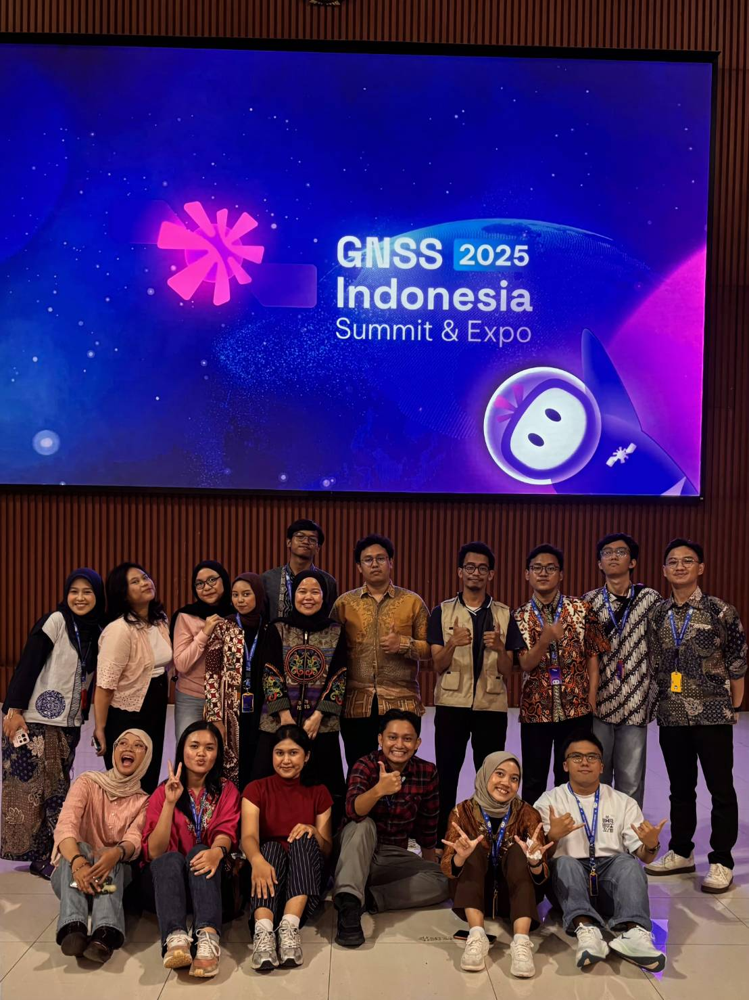
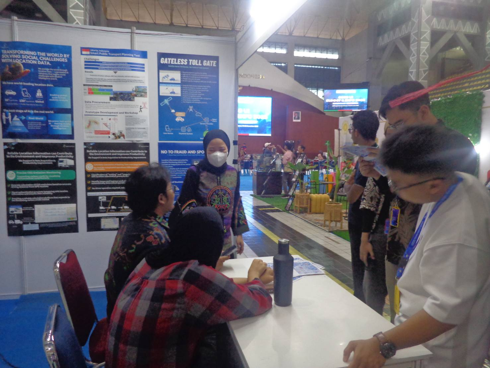
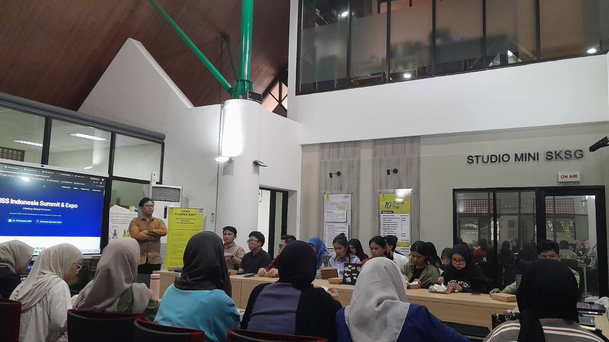
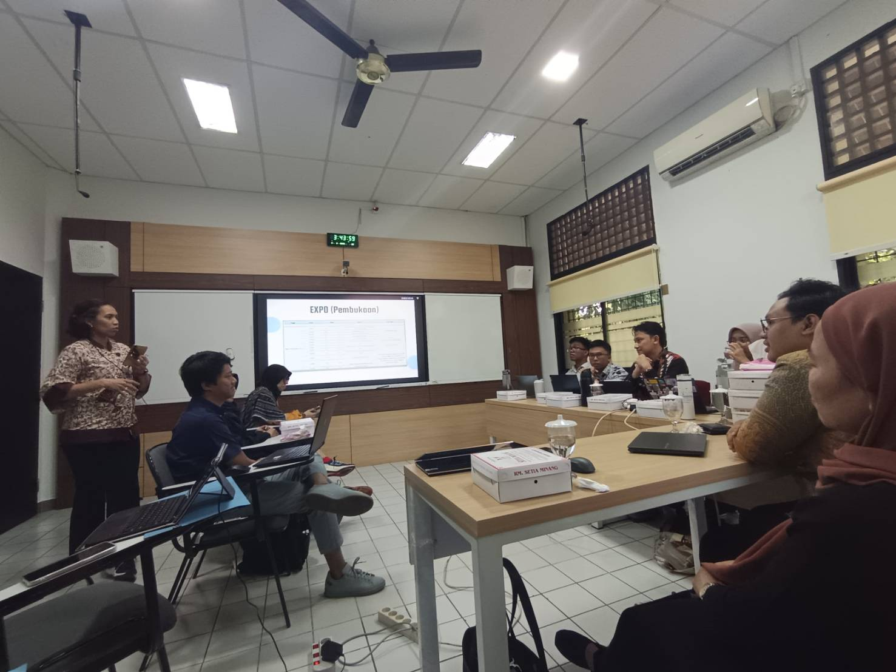
Kepala Biro Administrasi dan Kesekretariatan
HMD Geografi FMIPA UIKota Depok
Memimpin biro 8 staf, mengoptimalkan alur administrasi untuk seluruh departemen HMD. Meluncurkan situs web terintegrasi (carrd.co) untuk sentralisasi dokumen. Memimpin proyek 2 bulan untuk 3 kegiatan (Musyawarah Kerja, Peluncuran Perdana, Pembentukan Tim) sebagai Koordinator Proyek. Sebagai Komite Pengarah SEMTA 2023 (120+ peserta).


Staf Biro Administrasi dan Kesekretariatan
HMD Geografi FMIPA UIKota Depok
Merintis dan mengarahkan “Seminar Kesekretariatan 2022” sebagai Koordinator Proyek. Memproses dan mengaudit 25+ dokumen administratif untuk 3 departemen inti. Mencapai tingkat kehadiran 60% dari fungsionaris 12 biro dan departemen.


Team Leader
Rohani Kristen SMAN 6 BekasiKota Bekasi
Menjabat sebagai Team Leader di Rohani Kristen SMAN 6 Bekasi, bekerja sama dengan sekretaris, bendahara, tim multimedia, dan koordinator angkatan siswa, menjadi pengalaman kepemimpinan organisasi pertama yang benar-benar berarti bagi saya sebelum memasuki bangku kuliah. Mengoordinasikan ibadah persekutuan doa setiap Jumat dan saat teduh setiap pagi yang dihadiri lebih dari 120 siswa secara konsisten mengasah kemampuan berbicara di depan umum dan keterlibatan dengan audiens saya, dengan cara yang tidak bisa didapatkan dari ruang kelas mana pun.
Selain kegiatan rutin mingguan, saya membimbing delapan anggota melalui program pengembangan diri bernama Kelompok Tumbuh Bersama, memimpin upaya penggalangan dana yang rata-rata mencapai Rp250.000 per minggu untuk mendukung kegiatan amal dan perjalanan misi, serta mengawasi acara tahunan besar termasuk Perayaan Natal dan Retreat 2019. Pengalaman ini mengajarkan saya sejak dini bahwa kepemimpinan bukan sekadar memberi instruksi, melainkan tentang secara konsisten hadir untuk orang lain, minggu demi minggu.
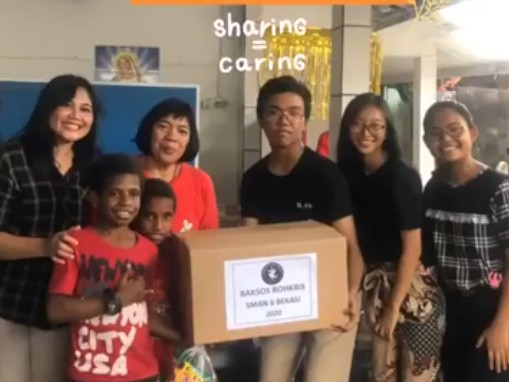
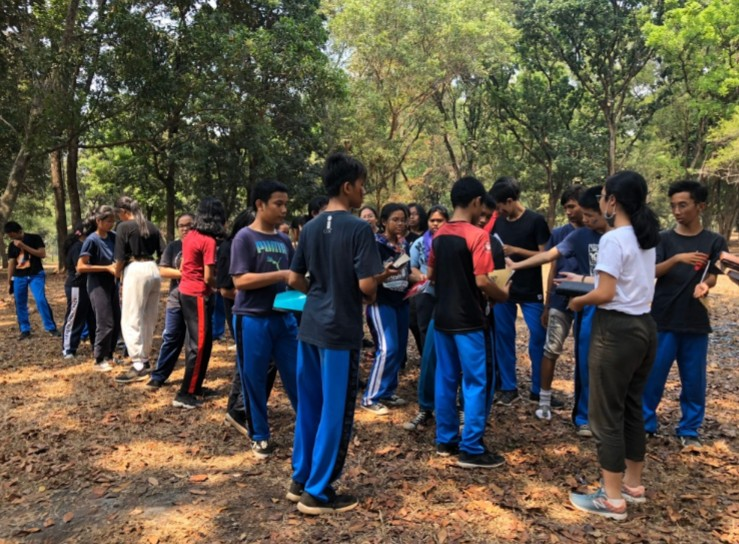
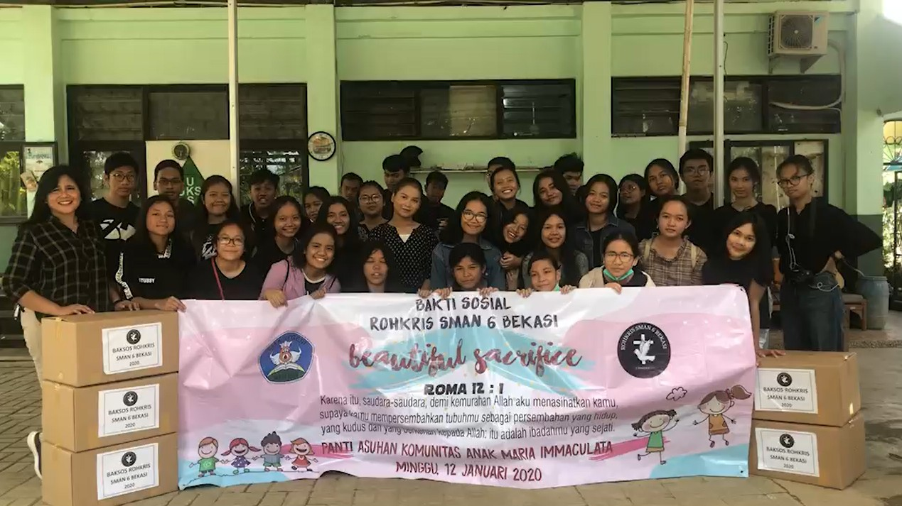
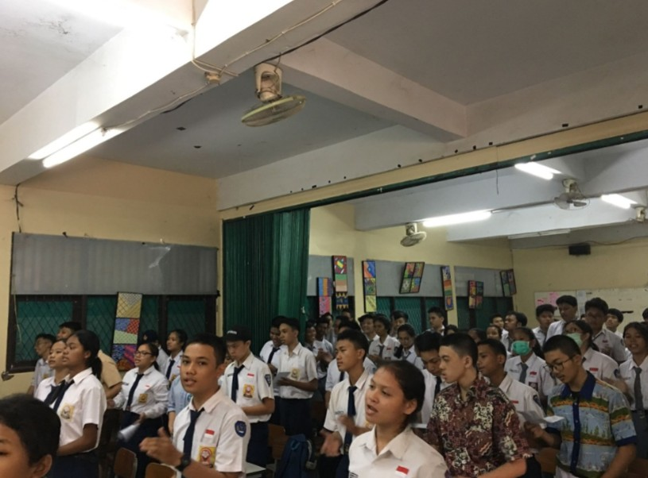
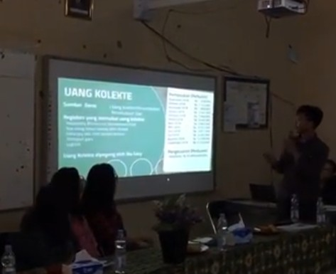
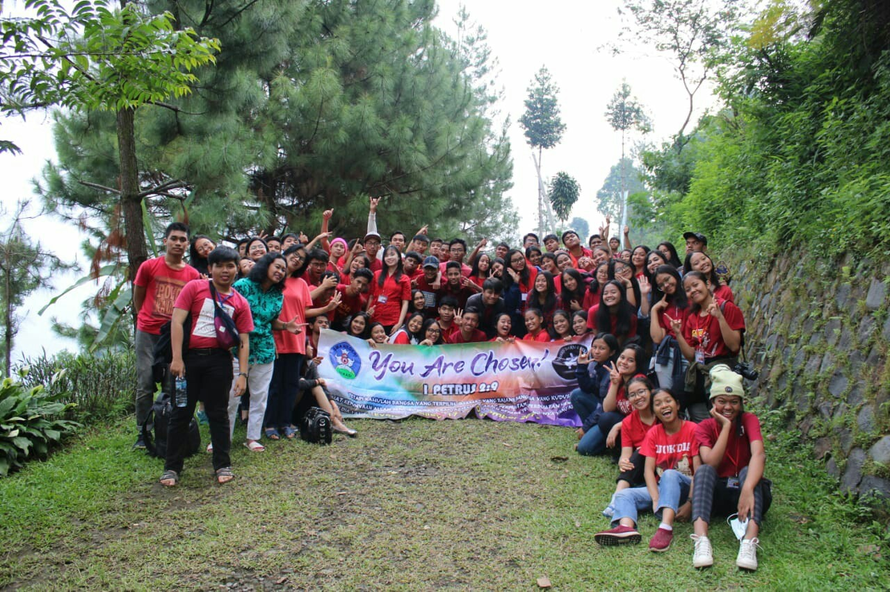
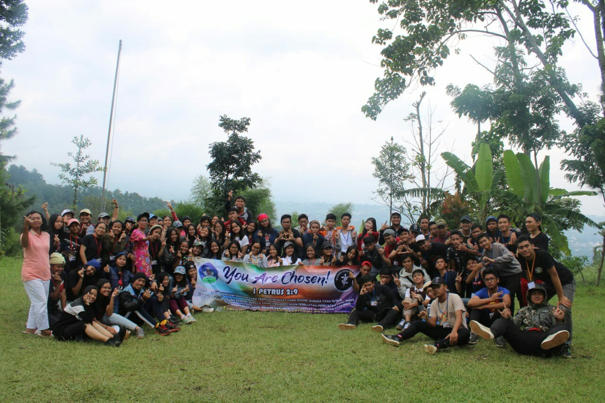
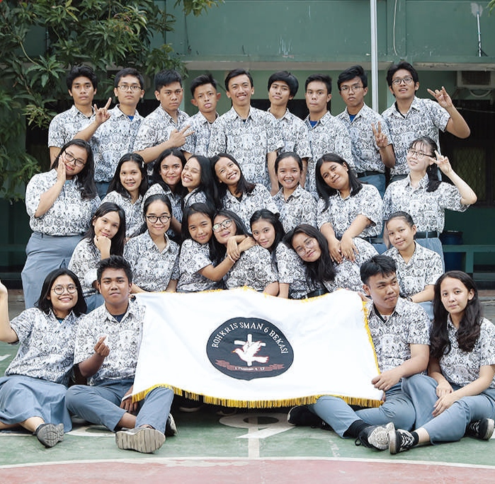
Kepanitiaan
Sekretaris
Syukuran Akbar dan Pesta Kelulusan Geografi 2023
Mengelola dokumentasi resmi untuk Syukuran Akbar dan Pesta Kelulusan Geografi 2023, yang pada dasarnya merupakan dua acara sekaligus, mengajarkan saya seberapa besar beban administratif yang berada di balik satu perayaan. Setiap detail, mulai dari daftar kehadiran hingga surat resmi, harus dipastikan rapi untuk kedua acara tersebut. Peran ini bukan yang paling terlihat pada hari acara berlangsung, namun merupakan jenis pekerjaan yang memastikan tidak ada hal yang terlewat bagi semua pihak yang terlibat.
Steering Committee
Seminar Tugas Akhir (SEMTA) 2023
Bertugas dalam Steering Committee SEMTA 2023 berarti mengambil jarak dari pekerjaan teknis dan justru memberikan pengawasan strategis serta bimbingan kepada Biro Kestari. Ini merupakan bentuk kepemimpinan yang berbeda dari yang biasa saya jalani, yaitu mengarahkan, bukan mengerjakan langsung. Membantu memastikan seminar ini menjangkau lebih dari 120 peserta mengajarkan saya bahwa terkadang kontribusi paling berharga bukanlah berada di ruangan menjalankan acara, melainkan memastikan orang yang menjalankannya mendapat dukungan dan arahan yang mereka butuhkan.
Staf Logistik
Kuliah Kerja Lapang 2 (Kabupaten Gunungkidul)
Pekerjaan logistik jarang mendapat sorotan, namun mengelolanya untuk KKL 2 mengajarkan saya betapa banyak detail yang jarang disadari orang di balik sebuah perjalanan riset. Saya menangani pengadaan dan distribusi spanduk serta perlengkapan kesehatan, lalu mengoordinasikan makan harian dan camilan, sarapan, siang, dan malam, untuk 138 mahasiswa dan 13 dosen selama lima hari, sekaligus mengelola pasokan 24 dus air mineral. Mengawasi kebutuhan perlengkapan umum untuk kelancaran kegiatan lapangan membuat saya menyadari bahwa hasil riset yang baik sering kali bergantung pada logistik yang tidak diperhatikan orang lain sampai terjadi masalah.
Project Officer
Musyawarah Kerja, Grand Launching, & Team Building 2023
Mengoordinasikan tiga acara organisasi, yaitu Musyawarah Kerja, Grand Launching, dan Team Building, dalam rentang waktu dua bulan untuk pengurus HMD Geografi 2023, mendorong saya untuk berpikir secara paralel, bukan menangani satu acara pada satu waktu. Yang membuat proyek ini berbeda adalah penerapan sistem pengukuran kinerja untuk mengevaluasi hasil setiap acara terhadap target yang telah ditetapkan sebelumnya. Hal ini mengubah cara saya memandang keberhasilan proyek, bukan sekadar apakah acaranya terselenggara, tetapi apakah acara itu benar-benar mencapai apa yang telah ditetapkan.
Ketua Kelas
Kuliah Kerja Lapang 1 (Desa Cimanggu)
Memimpin kelas beranggotakan 22 orang selama lima hari kegiatan lapangan geografi berarti mengemban dua peran sekaligus: koordinator dan peneliti. Sebagai koordinator, saya menjadi penghubung utama dan penanggung jawab logistik dengan pihak desa, mengurus akomodasi dan logistik di empat dusun sekaligus meneliti enam tema geografi berbeda. Sebagai peneliti Geomorfologi, saya melakukan pemodelan spasial dan validasi lapangan, lalu mempresentasikan temuan kami kepada lebih dari 140 pemangku kepentingan, termasuk pejabat pemerintah. Yang paling saya banggakan adalah mengoordinasikan keenam tema riset tersebut menjadi satu publikasi resmi, Buku Publikasi Desa Cimanggu, merancang sampulnya, dan mengembangkan tata letak peta geomorfologi standar yang dapat digunakan oleh seluruh kelas. Memiliki peta geomorfologi kami terdaftar HAKI membuat kerja keras lima hari itu terasa menghasilkan sesuatu yang benar-benar bertahan.
Project Officer
Seminar Kesekretariatan 2022
Memimpin perencanaan dan pelaksanaan Seminar Kesekretariatan 2022 dari awal hingga akhir berarti membangun sebuah workshop dari nol dengan satu tujuan spesifik, yaitu menstandardisasi prosedur administrasi di lingkup HMD Geografi. Mencapai tingkat kehadiran 60 persen dari fungsionaris di 12 biro dan departemen berbeda menunjukkan bahwa konten yang disampaikan benar-benar relevan, bukan sekadar kewajiban menghadiri workshop administratif.
Project Officer
Musyawarah Besar dan Regenerasi ROHKRIS 2018/2019
Memimpin Musyawarah Besar dan Regenerasi ROHKRIS berarti mengawasi suksesi kepemimpinan itu sendiri, bukan sekadar menjalankan program. Saya menangani sosialisasi peserta serta tantangan koordinasi internal secara langsung, lalu menyusun laporan pertanggungjawaban lengkap yang mencakup eksekusi, keuangan, dan hasil kegiatan. Mengelola proses regenerasi kepemimpinan, alih-alih memimpin acara secara langsung, memberi saya perspektif berbeda tentang kesuksesan: bukan tentang seberapa baik saya memimpin, melainkan seberapa siap orang berikutnya untuk melanjutkan.
Sekretaris
Ibadah dan Perayaan Natal SMAN 6 Bekasi Tahun 2019
Menjabat sebagai Sekretaris untuk Ibadah dan Perayaan Natal SMAN 6 Bekasi, salah satu acara tahunan besar sekolah, mengajarkan saya bahwa dokumentasi yang baik adalah yang sesungguhnya menjaga sebuah kepanitiaan tetap berjalan. Saya mengelola seluruh kebutuhan administratif dan dokumentasi resmi, menjadwalkan serta mengoordinasikan setiap rapat kepanitiaan, dan memastikan seluruh anggota tetap mendapat informasi yang sama sepanjang acara berlangsung. Menangani korespondensi resmi dan menjaga arsip terpusat untuk seluruh materi acara mungkin tampak seperti detail kecil pada saat itu, namun ternyata menjadi hal yang secara tepat menjaga keselarasan seluruh tim hingga acara selesai.
Staf Logistik
Retreat Rohkris SMAN 6 Bekasi Tahun 2019
Menangani logistik untuk Retreat Rohkris 2019 berarti mengelola anggaran hingga ke detail terkecil, mulai dari satu juta rupiah untuk pengadaan lentera, spanduk, alat tulis, dan stiker dengan total Rp290.400. Pengalaman ini mengajarkan saya bahwa bahkan anggaran sekecil apa pun tetap memerlukan kedisiplinan yang sama seperti anggaran besar, agar segala sesuatunya benar-benar siap tepat waktu.
Sertifikasi
Perencana Detail Tata Ruang (RDTR) Bersertifikat
MSIB INSPIRING ProgramKementerian ATR/BPN
Menyelesaikan 15 modul kompetensi dalam program magang bersertifikat, mencakup penyusunan Rencana Detail Tata Ruang (RDTR), analisis kebijakan spasial dan sektoral, pembuatan peta rencana pola dan struktur ruang, penyusunan peraturan zonasi, hingga penerapan Sistem Informasi Geografis untuk analisis geografi baik hard skill maupun soft skill seperti problem solving dan teamwork dengan nilai 80/100 di seluruh modul.

Visualisasi Transit Oriented Development (TOD)
Kelas GIS LanjutAksara Lab Indonesia
Mengikuti pelatihan intensif Kelas GIS Lanjutan bertema Transit Oriented Development (TOD) Mapping, mencakup pengolahan data spasial shapefile untuk penggunaan lahan, jalan, dan jalur rel, hingga visualisasi 3D kawasan stasiun menggunakan plugin QGIS2threejs. Materi juga meliputi pengukuran aksesibilitas jangkauan pejalan kaki dari stasiun, sebuah kompetensi yang relevan langsung dengan perencanaan transportasi dan tata ruang berbasis transit. Meraih indeks penilaian kumulatif 9/10 dengan predikat Sangat Baik.
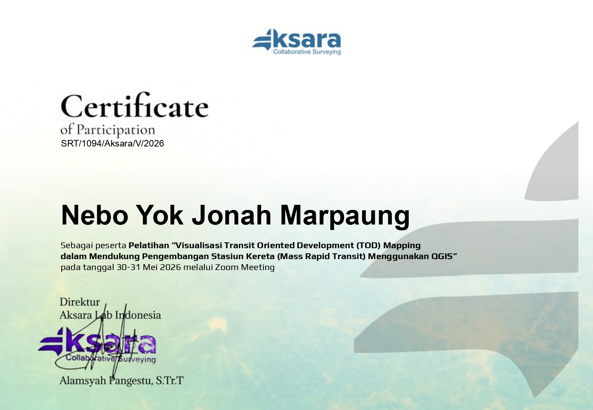
EKSPEDISI LAPANGAN
Kerja lapangan menuntut navigasi, logistik, koordinasi, dan ketangguhan. Peta menjadi rekaman fisik ketika medan menggantikan meja kerja.
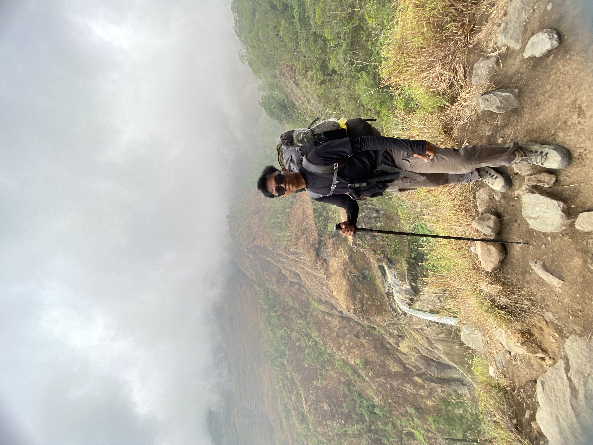